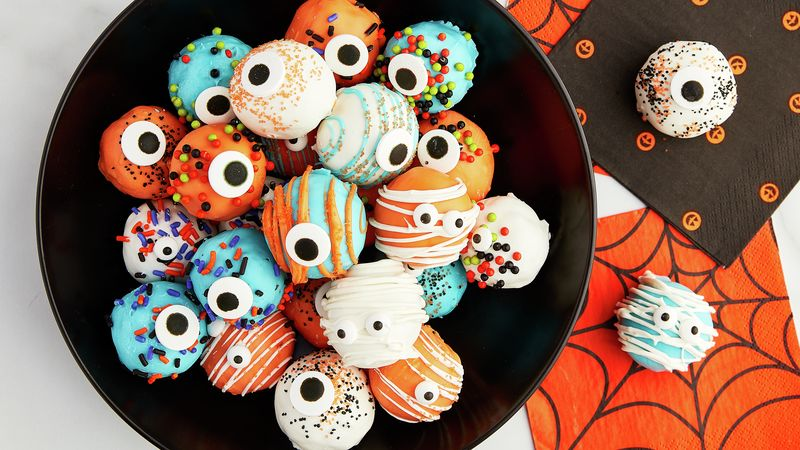
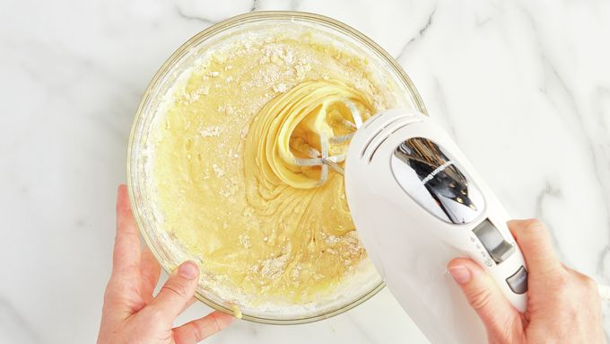
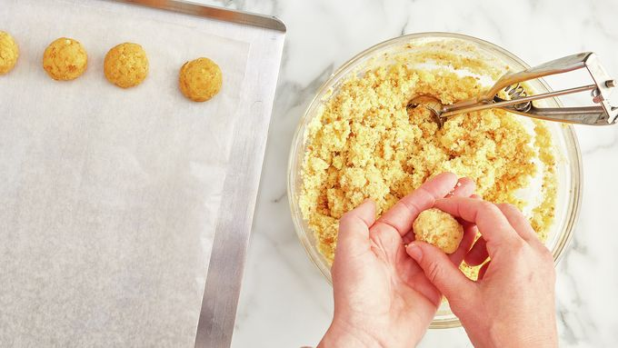
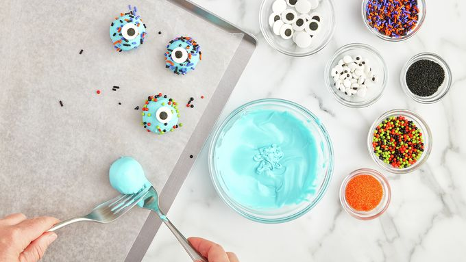

Monster Cake Balls Recipe

Not only are these super easy to make, but they're fun too!
Goblins, witches, mummies, and more! These yellow cake balls
are coated in frosting and are sure to be a big hit for the
entire family!
INGREDIENTS:
- 1 box (15.25 oz) Betty Crocker™ Super Moist™ Yellow Cake Mix
Water, vegetable oil and eggs called for on cake mix box
- 1 cup from 1 tub (16 oz) Betty Crocker™ Rich & Creamy
Vanilla Frosting
- 1 3/4 cups light blue candy melts (from 12-oz bag)
- 1 3/4 cups orange candy melts (from 12-oz bag)
- 1 3/4 cups white candy melts (from 12-oz bag)


